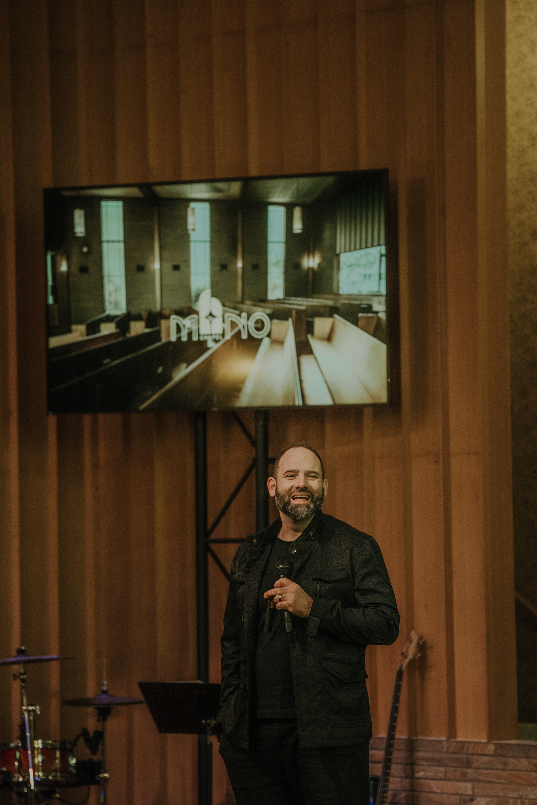

We are open all Sundays at 10:00AM AEST! Please visit us at 165 Shannon Avenue, Manifold Heights, Victoria, 3218 AU

Whether you're full of faith, full of questions, or somewhere in between, we hope you'll find Mano a welcoming place to belong.
We get together here every Sunday morning. Doors are open from 9:15am. At 10am we gather in the chapel to unpack some scripture. From 11:15am, you'll find us gathered in the 111 year old hall for food, a cuppa & chat. It's leaky, but we love it!
You're welcome to join us as we encourage one another, care for our community, and work to make a positive difference together.
Psalm 46:10